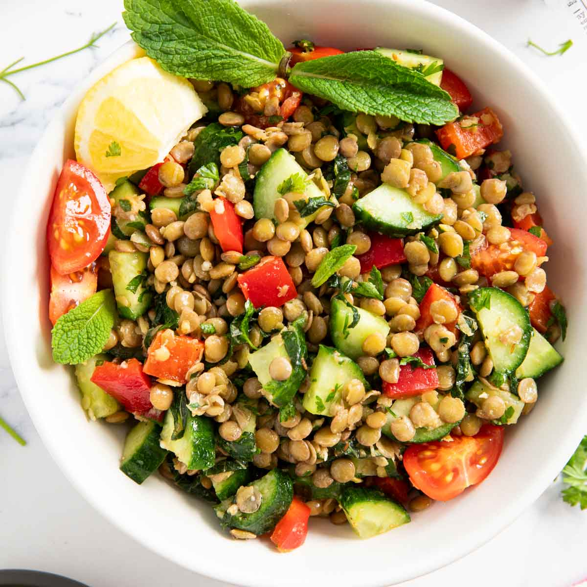

Mediterranean Chicken Breasts With Avocado Tapenade

My husband and I made this for dinner last night and our only complaint was that we ate too much because it was so good!
Crispy Fried Falafel
First time making falafel and this was surprisingly easy and really really good. They were crispy on the outside and super tender in the middle.
Lebanese Lentil Salad
A very refreshing salad that's easy to throw together....would be made quicker with the use of canned lentils. I had it for lunch with some nice home made bread... Yummo!